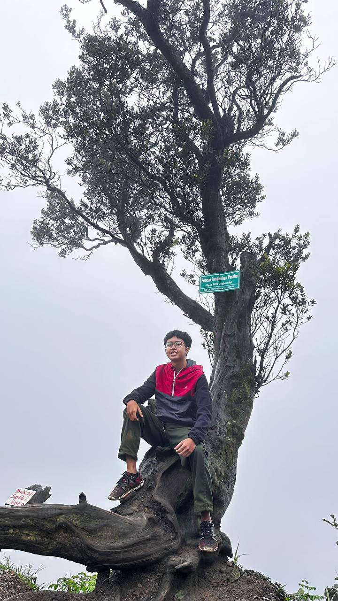

Tentang Saya
Saya seorang mahasiswa aktif D4 Teknik Informatika di Politeknik Negeri Bandung. Memiliki kemampuan menganalisis data, manajemen waktu, dan teamwork. Tertarik pada bidang Software Engineering, Programming, dan Data Analis.

Saya seorang mahasiswa aktif D4 Teknik Informatika di Politeknik Negeri Bandung. Memiliki kemampuan menganalisis data, manajemen waktu, dan teamwork. Tertarik pada bidang Software Engineering, Programming, dan Data Analis.
| Keterampilan | Proficiency |
|---|---|
| HTML/CSS | Beginner |
| C | Beginner |
Setelah melakukan praktikum ini saya mulai mengenal apa itu website, dimulai dari sejarah dibangunnya WWW, lalu ada juga generasi-generasi website, dan yang paling penting yaitu bagaimana cara membuat website menggunakan HTML dan CSS, serta tidak lupa bagaimana cara scraping data menggunakan python.
Semoga saya dapat memberikan manfaat pada lingkungan sekitar dengan menggunakan ilmu-ilmu yang telah saya gali di JTK ini selama 4 tahun, aaamiinn